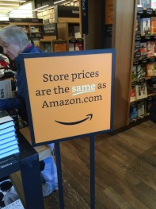

The E-Commerce Revolution of the 1990s
You are visitor #001995!
📚 Introduction: The Death of the Corner Bookstore? 📚
Welcome to my research project on how Amazon.com and eBay changed the face of retail forever! In the mid-1990s, two websites emerged that would reshape how Americans bought books and everything else. This site explores how these online giants took on traditional corner bookstores and what it meant for communities across America.

The early days of online shopping
🌐 Amazon.com: The "Earth's Largest Bookstore" 🌐
The Birth of Amazon (1994-1995)
In 1994, Jeff Bezos left his Wall Street job and moved to Seattle with a vision: create an online bookstore that could offer unlimited selection. Bezos chose the name "Amazon" because it started with "A" for alphabetical listings, and the Amazon River symbolized building the world's largest retailer. On July 16, 1995, Amazon.com officially launched, quickly gaining traction among early internet adopters.

Amazon revolutionized book buying
The Amazon Advantage
What made Amazon so threatening to traditional bookstores? Amazon faced considerable challenges overcoming consumer skepticism about online shopping in the mid-1990s, with concerns about credit card security and unfamiliarity with e-commerce platforms. But Amazon addressed these by providing seamless and reliable shopping experiences with secure payment systems.
By 1997, Amazon had grown enough to go public, raising $54 million on the NASDAQ exchange. The company's customer-centric approach and vast selection set it apart from traditional retailers. Unlike physical bookstores limited by shelf space, Amazon could offer millions of titles at competitive prices with nationwide delivery.
Scholarly Perspective: Amazon's Strategy
According to a 2024 academic study, "Bezos emphasized reinvesting profits into scaling operations and improving the customer experience rather than pursuing immediate financial returns, setting the foundation for Amazon's long-term growth model" (Carreno, 2024). This strategy allowed Amazon to undercut bookstore prices while building a loyal customer base.
Source: Carreno, A.M. (2024). "Analyzing Amazon's Evolution from an Online Bookstore to a Global Tech Giant." ResearchGate.
🔨 eBay: The Online Auction Revolution 🔨
Birth of the Marketplace (1995)
eBay was founded by Pierre Omidyar in September 1995, allowing users to buy or view items via online auctions or instant sales. Unlike Amazon's fixed-price model, eBay created a marketplace where anyone could sell anything. The most purchased items were Beanie Babies, accounting for 10% of all listings in 1997.

eBay's auction model democratized online selling
Meg Whitman was appointed CEO in March 1998, when the company had 30 employees, 500,000 users, and revenues of $4.7 million. eBay's impact on retail was different from Amazon's but equally significant. It allowed individuals to compete with retailers, including selling used books that competed with both new bookstores and Amazon.
The E-Commerce Boom
The 1990s marked the advent of online retail, with early platforms like Amazon and eBay emerging and redefining the shopping experience. Together, these platforms laid the groundwork for modern e-commerce by introducing secure payment systems and user-friendly interfaces.
📉 The Devastating Impact on Independent Bookstores 📉
The Statistics Tell a Grim Story
The numbers paint a devastating picture of Amazon's impact on corner bookstores. Between 1995 and 2000, the number of independent bookstores in the United States plummeted 43 percent, according to the American Booksellers Association. That's nearly half of all independent bookstores gone in just five years!

The struggle of independent bookstores in the digital age
1995 was particularly important because while the American Bookseller Association recorded an all-time high in the number of independent bookstores, Amazon launched that same year and offered buyers nearly unlimited books with much lower prices. The timing couldn't have been worse for traditional booksellers.
Why Bookstores Couldn't Compete
Corner bookstores faced multiple disadvantages against online retailers:
- Limited Inventory: Physical stores could only stock thousands of books, while Amazon offered millions
- Higher Prices: Overhead costs meant bookstores couldn't match Amazon's discounts
- Convenience Factor: Customers could shop from home 24/7 instead of visiting stores during business hours
- Shipping Innovations: Amazon's distribution network made delivery fast and affordable
Community Impact
Not only had traditional buying channels fundamentally shifted, but the core product—the printed book—came under threat with Amazon's Kindle launch in 2007. Bookstores weren't just businesses; they were community gathering places. Their closure meant the loss of local jobs, community events, and spaces where neighbors could browse and discover new books through personal recommendations.
Harvard Business School Professor Ryan Raffaelli conducted extensive research on this phenomenon. Between 2012 and 2017, he visited bookstores in 26 states, conducted hundreds of interviews and focus groups with booksellers, authors, and publishers, and scoured 30 years of news articles to understand how bookstores adapted.
Source: Raffaelli, R.L. (2020). "Reinventing Retail: The Novel Resurgence of Independent Bookstores." Harvard Business School Working Knowledge.
💿 P2P Issues in the 1990s: A Parallel Digital Disruption 💿
The Rise of Napster and File Sharing
While Amazon and eBay were disrupting retail, another digital revolution was threatening the entertainment industry. On June 1, 1999, Napster launched, and by December 6, 1999, the Recording Industry Association of America sued Napster for contributory and vicarious copyright infringement. This marked a flashpoint between cultural industries and internet startups.
Watch: The Impact of Digital Disruption
Understanding the digital revolution of the 1990s
How P2P File Sharing Worked
Napster was software you downloaded onto your computer which allowed you to search for MP3 files on the computers of other users, then download via peer-to-peer technology. The MP3 format was relatively new and fast becoming the standard for digital distribution of music.
Napster's popularity exploded to tens of millions of users almost overnight, with an estimated 26 million to 80 million people sharing songs for free at its peak. This massive P2P network allowed fans to obtain virtually any song without paying, eroding the traditional album-sales model.

The peer-to-peer revolution changed media consumption
The Parallels with E-Commerce
Just as Amazon disrupted bookstores, Napster disrupted record stores. Both represented a shift from physical retail to digital distribution. U.S. recorded music revenues plummeted by roughly 50% during the 2000s as piracy took hold. The cultural impact was enormous—people began expecting content for free or at drastically reduced prices.
Legal Consequences
In 2001, after losing a lawsuit, Napster was forced to shut down, but the genie was out of the bottle as numerous copycats and decentralized P2P networks sprang up. The lesson? Technology moves faster than law, and once consumers experience convenience and low prices, there's no going back.
CD sales were down over 10% in 2002 and the declining trend continued nearly unabated until 2015, when recording industry revenues had declined to less than half of their pre-Napster levels (Brabec & Brabec, 2023). The parallel to bookstore closures is striking.
Source: Brabec, J. & Brabec, T. (2023). "Napster, the iPod, and Streaming: The Record Industry in the New Millennium." Pay for Play: How the Music Industry Works.
The Bigger Picture
Both Amazon/eBay and P2P file sharing represented the same phenomenon: digital technology disrupting traditional retail models. Whether books or music, the 1990s showed us that physical stores were vulnerable to online alternatives that offered greater selection, lower prices, and unprecedented convenience. The question wasn't if retail would change, but how fast.
📚 Research Sources & Further Reading 📚
Scholarly Articles Used:
- Raffaelli, R.L. (2020). "Reinventing Retail: The Novel Resurgence of Independent Bookstores." Harvard Business School Working Knowledge.
- Carreno, A.M. (2024). "Analyzing Amazon's Evolution from an Online Bookstore to a Global Tech Giant." ResearchGate.
- Brabec, J. & Brabec, T. (2023). "Napster, the iPod, and Streaming: The Record Industry in the New Millennium." University of Oregon Open Textbook.
- Crotty, D. (2017). "Why Independent Bookstores Work in the Age of Amazon." The Scholarly Kitchen.
Contemporary Sources:
- Berkeley Economic Review (2024). "The Rise and Fall of the Amazon Bookstores."
- Cybercultural (2025). "The Emergence of Napster and P2P File Sharing in 1999."
- University of North Texas (2025). "Recommerce is Changing the Face of Global Fashion Retail."